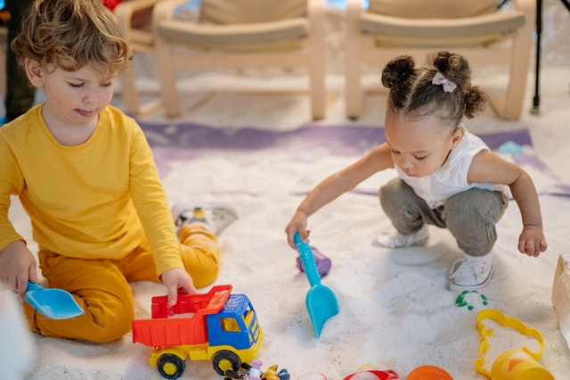

de Noelia Muñoz
¿Cuándo empieza la etapa egocéntrica en los niños?
: Distintos estudios han concretado que esta etapa comienza entre los 2 y 3 años y que todos los niños tienden a ser egocéntricos ya que no entienden que existen otras personas con las que tienen que compartir y no son capaces de ser empáticos. Sin embargo, una buena educación puede hacer que esto cambie.
- Fase de descubrimiento
: Durante esta fase es muy importante dar ejemplo al niño y enseñarle la manera correcta de comportarse. Está aprendiendo sobre todo aquello que se encuentra a su alrededor y por ello si nota un comportamiento individualista por parte de otra persona lo acabará imitando.
- Fase de vinculación: Es la segunda fase de la etapa egocéntrica del niño. Se da entre los 6 y 7 años ya que es el momento en el que este empieza a entender lo que significa cooperar y consigue compartir con otros. Hasta los 5 años, el niño no es capaz de esto ya que no entiende que el juego puede tener como objetivo un fin común.
- Fase de aceptación: Durante está última fase el niño demuestra que ya ha adquirido las habilidades sociales adecuadas. Estas habilidades suelen ser aprendidas mediante la instrucción, la imitación, la preparación y la práctica. Esta fase suele comenzar alrededor de los siete años.
